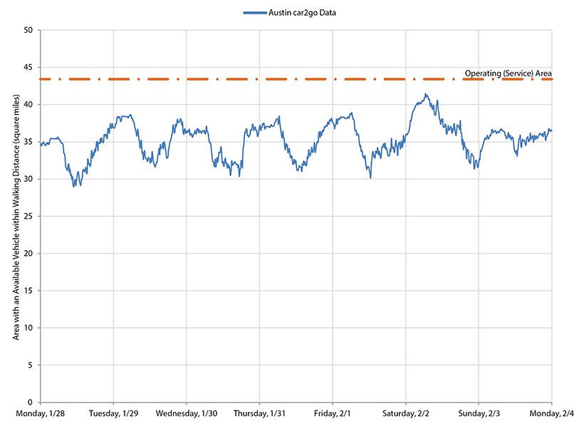

In the last 10-15 years, carsharing has attracted significant attention as a “green” transportation alternative that can reduce car dependence and promote smarter, healthier mode choice in urban areas. Despite rapid growth and aggressive funding, carsharing remains a niche product with quantifiable but relatively small benefits. A new type of carsharing seeks to expand its reach—and perhaps its benefits—by eliminating some of the inconveniences of traditional services, such as having to book in advance and having to return the car to the same location. Flexible carsharing, pioneered by Daimler’s car2go program in late 2008, also introduces a logistical problem not present in traditional carsharing: the spatial distribution of vehicles tends to be irregular due to the randomness of demand. Vehicle redistribution, which can be done periodically (e.g., at the end of the day) or continuously, can be used to ameliorate this problem. By using an agent-based model of a flexible carsharing system, this research explores the trade-offs between fleet size and hired vehicle redistributors, with the objective of maximizing the demand level that can be satisfactorily served. Production functions for representative city sizes and demand densities are presented. Finally, the results of the simulation are compared with actual data from car2go’s Austin, TX operation, The comparison suggests that the model reasonably estimates the steady-state level of service of a flexible carsharing system.
Car2go available vehicles are drawn on top Google Maps. A buffer area of 1/3 of a mile represents the distance drivers are willing to walk to get a vehicle. The union of these individual buffers becomes the area with service availability.
The following figure shows the availability as a function of time. The availability area was calculated using the Google Maps projection.
